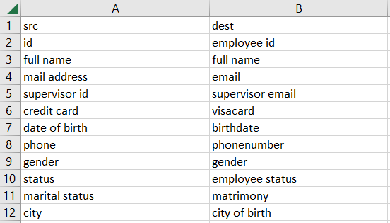

The mapping file has to be a .csv format. As shown below, 3 columns are necessary:
- src for the first dataframe;
- dest for the second dataframe;
- type of the given field.
If the type of a given field is a date, the string "date" has to be written. Further type might be
implemented in the future.

The application also allows the user to perform many to one transformations, based on the field name.
We give here the steps to apply such transformation on the src file, which can also be applied on
the dest file.
- The user must create a folder named transformations at the root of the src file.
- One .csv file with semicolon (";") separator must be created for each field to transform. The
file name has
to be the same than the field to transform (e.g. gender.csv , country.csv, etc)
- Each csv file must contain 2 columns : src (value to transform) and dist (transformed
value).
- During the process, the application will automaticaly detect the presence of the
transformations
folder and iterate over the .csv files inside it.
If there isn't any transformations folder, the code will ignore this step.
If a file inside the transformations folder has a name which doesn't correspond with any field in
the
src file, the transformation will be ignored.
This feature is applied before the lambda transformations (see fields_lbda_trans).
Configuration Documentation
id_mapping
Specifies details about ID mapping.
- filename: Dynamic parameter, do not change.
- method: The method used for the Data Alignment. Only "Basic" implemented
yet.
- pivot_alias: List of pivot aliases for sheet names in the final
report. Aliases should
be
short.
If not provided, only the 15 first characters from the pivot fields will be kept (Excel limitation)
- sep: Depecrated parameter, will be remove soon.
- source1_id: Depecrated parameter, will be remove soon.
- source2_id: Depecrated parameter, will be remove soon.
mappingfile
Specifies details about the mapping file.
- filename: Dynamic parameter, do not change.
- init_path: Path of the mapping file. Have to be a .csv
file.
- separator: Separator used for the mapping file.
options
Specifies details about the mapping file.
Depectrated section, will be removed soon.
source1 & source2
Specifies details about the source 1 configuration.
- aggregation_field: Not implemented yet, ignore.
- all_pivots: List of all pivot fields for source 1. Should be parsed as a list as
follow:
- field 1
- field 2
- field 3
- all_pivots: List of all pivot fields for source 1. Should
be parsed as a list
as
follow:
- field 1
- field 2
- field 3
- date_format: Date format string, for instance : "%Y/%m/%d" for
YYYY/MM/DD
format. This
will allow to modify the date kind fields between both sources.
- fields_lbda_trans: List of fields for lambda transformation. Should
be parsed as a list
as
follow:
- Field 1
- Field 2
- Field 3
- lbda_trans: List of lambda transformations for fields given in
fields_lbda_trans.
Each lambda transformation has to be written in python format.
For instance : lambda x:x.split('_')[-1].
Should be parsed as a list as
follow:
- field 1
- field 2
- field 3
- fields_to_filter: List of fields to filter. Should be parsed as a
list as
follow:
- Field 1
- Field 2
- Field 3
- values_to_filter: Nested list of values to filter for fields given
in
fields_to_filter.
Should be parsed as a nested list as
follow:
- - Value 1 (field 1)
- Value 2 (field 1)
- - Value 1 (field 2)
- - Value 1 (field 3)
- fields_to_merge: Fields to merge together. The separator will be a
sapce. Should be parsed as a **list of list**.
- - Field 1 to merge with
- Field 2 and
- Field 3
- - Field 4 to merge with
- Field 5
- fields_to_merge_name: Fields name as to give as result to the
merged fields in `fields_to_merge`. Should be parsed as a **list**.
- Field 1
- Field 2
- dupl_priority_field: Field used to apply a filter on the
entries with duplicate _main_id_ to keep
some of them depending of this field value (see `dupl_priority_value`). Should be part of the mapping,
otherwise ignored.
- dupl_priority_value: Value used as top priority in the field
`dupl_priority_field`. Before isolating
values with duplicate _main_id_, the code will grouped them by _main_id_ and check the
`dupl_priority_field`. If there is a unique entry with the `dupl_priority_value`, then this entry will
be used in the main analysis. Otherwise they will remain in the isolated duplicate _main_id_ entries.
- automerge_field: Field to automerge with the destination field and
the pivot field. Should be parsed as a list of list as follow:
- - Field to auto merge (exemple : Manager ID)
- Destination field (exemple: Email)
- Pivot field (exemple: ID)
- New field name (exemple: Manager Email) (optional, if not provided the new
values will replace the Field to merge)
- - Field to auto merge 2
- Destination field 2
- Pivot field 2
- New field name 2 (optional)
- filename: Dynamic parameter, do not change.
- get_contry_from_le: Depectrated parameter, will be remove soon.
- id_field: Dynamic parameter, do not change.
- init_path: Path of the source 1 file. Have to be a .csv or
.xlsx
file.
- main_id: Main ID field for source 1.
- mapping_col_name: Name of the column in the mapping file corresponding
to source 1.
Should
be "src"
- name: Alias name for source 1 (for instance src). Will be used
for generated
filename. Soon fuse with
prefix parameter.
- pivot_field: Dynamic parameter, do not change.
- prefix: Prefix for source 1 (for instance src_). Used as
signature for
fields/sheets name in the final report.
- separator: Separator used for source 1 (matter if .csv format).
- skiprows: Number of rows to skip for source 1 data (header or blank
rows).